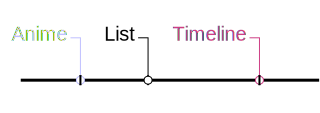

This is a work in progress. About/Source/Support:
https://github.com/linkviii/js-animelist-timeline

Anilist Timeline
Generate a timeline of when you watched anime from dates on your AniList.
Show advanced options
List
Username
Media
Anime
Manga
Format
TV
Short
Movie
Special
OVA
ONA
Music
Format
Manga
Novel
One Shot
Plot
Timeline
Watch time
Dates (optional)
From
Focus on year
Up to
•
Show n most recent
Events
All
Prefer Start
Prefer Finish
Start Only
Finish Only
Binged Only
Title Filter
Include
Exclude
Clear Filter
Language
English
Romaji
Native
Seasons
Font Size
Width
New Timeline
Clear Form
Remove all